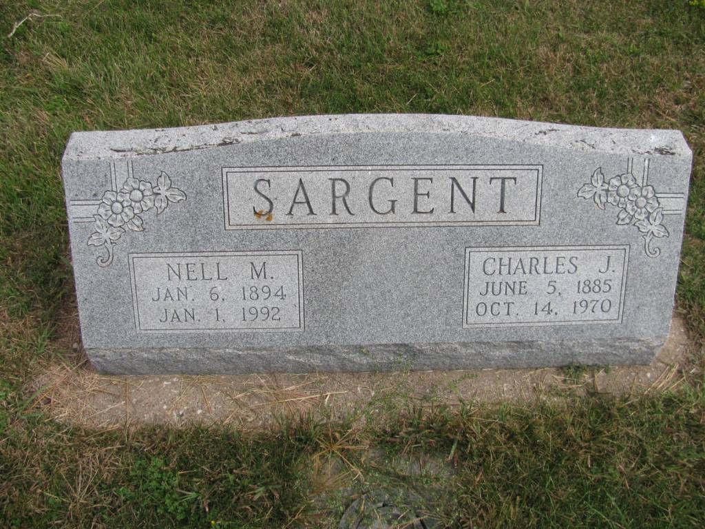
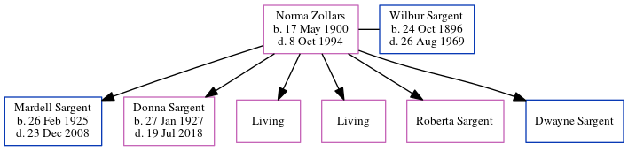

Nell M Sargent (née Thompson) 1894 - 1992
[ Home ] | [ Calendar ] | [ Surnames Index ] | [ Errors ] | [ Family History ]Nell Thompson, the wife of Charles Jacob Sargent (the third cousin three-times-removed on the mother's side of Nigel Horne), was born in Nebraska, USA on 6 Jan 18941,2,3,4 andhad 8 children, Leroy Charles, Edith M, Evert Wayne, Irene F, Helen N, Betty Jane, Opal J and Sidney.
During her life, she was living in Polk, Nebraska, USA on 1 Jun 19002 and on 1 Jan 19203; and in Osceola, Nebraska on 8 Apr 19306 and on 1 Apr 19407.
She died on 1 Jan 19924,5 and was buried at Graceland Cemetery, Shelby, Nebraska after 1 Jan 19925.
Children
- Leroy Charles was born on 4 Apr 1912
- Edith M was born on 12 Apr 1913
- Evert Wayne was born in Feb 1915
- Helen N was born on 6 Dec 1920
- Betty Jane was born on 24 Jul 1923
Citations
- Social Security Death Index - Findmypast
- US Census 1900 - Findmypast (was the daughter of the head of the household)
- US Census 1920 - Findmypast (was age 26 and the wife of the head of the household)
- United States Billion Graves index - Findmypast
- U.S., Find A Grave Index, 1600s-Current Ancestry.com Operations, Inc.
- US Census 1930 - Findmypast (was age 36 and the wife of the head of the household)
- US Census 1940 - Findmypast (was age 46 and the wife of the head of the household)
Media
Charles Sargent - Nell Thompson - headstone

Social Security Death Index - USBMD/SSDI/505402622
1930 US Census Transcription - USC-1930-004951879-00085-039
US Census 1930 - USC/1930/004951879/00085/034
US Census 1900 - USC/1900/004120377/00675/052
United States Billion Graves index - US/BMD/BILLION024170496
Family Tree
Map
Generated by ged2site. Last updated on Jul 3, 2024
Known Issues
No records of living with anyone
Adding date of burial as 'aft 1 Jan 1992'
Census information missing between Census US 1900 and Census US 1920
Date of death is known, but not place